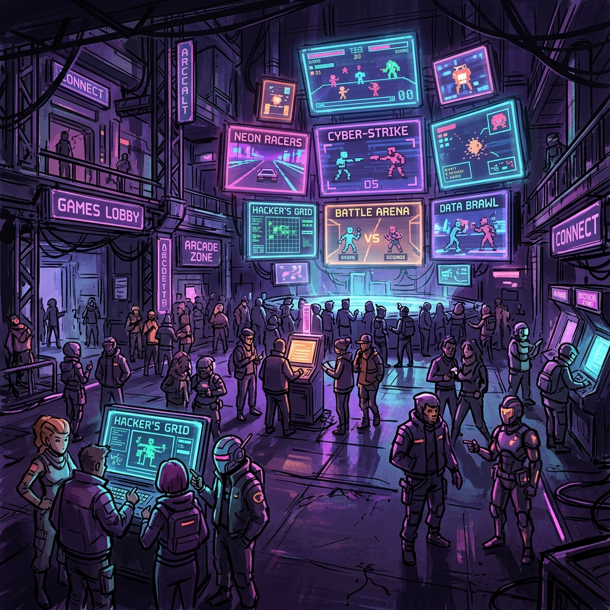

TECHNICAL OVERVIEW
NetLessons est un projet de recherche et développement sur le multijoueur temps réel. Il s'agit d'un hub regroupant plusieurs mini-jeux, construit sur une architecture Client/Serveur robuste utilisant ENet pour la couche transport UDP.
NETWORKING ARCHITECTURE
> GamePacket System
Implémentation d'une couche de sérialisation binaire avec surcharge des opérateurs << et >>. Gestion automatique de l'Endianness (Big/Little) pour garantir l'intégrité des données cross-platform.
> Client/Server Architecture
Synchronisation d'états basée sur un modèle de confiance serveur. Gestion des cycles de vie des paquets (Ack), des timeouts et des déconnexions sécurisées via une machine à états robuste.
> UDP Optimization (ENet)
Utilisation de ENet pour une gestion efficace des canaux. Mise en place de canaux séparés pour les données fiables (connexion, scores) et non-fiables (mouvements) afin d'optimiser la bande passante.
> Prediction & Reconciliation
Mise en œuvre de la prédiction côté client pour une réactivité instantanée des contrôles. Système de réconciliation fluide corrigeant la position locale sans saccades via un lerp adaptatif sur CORRECTION_STRENGTH.
> Système de Chat Avancé
Gestion multi-canaux (Global, Private) avec système d'onglets, chuchotements (Whispers) et messages système filtrables pour une communication fluide.
MINI-GAMES CATALOG
Red Light Green Light
Un jeu de réflexes où le serveur synchronise l'état de mouvement de tous les joueurs.
Hot Potato
Patate chaude multijoueur : transfert immédiat d'objet entre clients via des paquets ultra-légers.
Price is Right
Compétition de devinette en temps réel avec validation instantanée côté serveur.
Color Match
Mini-jeu de puzzle collaboratif testant la latence et la coordination des joueurs.